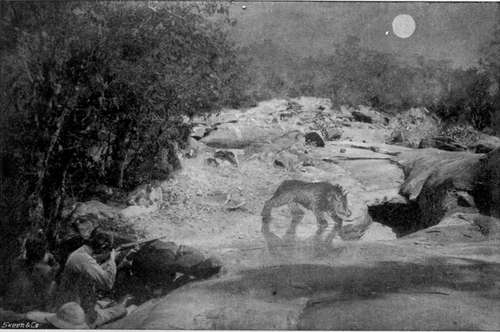

Night-Shooting. Continued
Description
This section is from the book "Sport In The Low-Country Of Ceylon", by Alfred Clark. Also available from Amazon: Sport in the Low-Country of Ceylon.
Night-Shooting. Continued
Two kinds of ambush are used by natives according to the disposition of the animal expected, and the nature of the ground. One, called in Tamil a shrâmbi, is a platform built in a tree or on a high bank, and the other, called a wuli, is a hole dug in the ground. The former is generally put up in dense forest where large trees stand near the water. It is a most uncomfortable contrivance to sit in, and is liable to give the sportsman cramps and aches, as he dare not move freely, to ease his stiffening limbs, for fear the creaking of the shaky structure might alarm some approaching animal. Wulis are usually dug at the margin of pools in the open, the earth thrown out helping to conceal the hunter, and serving as a gun-rest. They are more comfortable than shrambis, but are generally damp. Ambushes are sometimes made at water-holes among rocks by building a low semi-circular wall of loose stones.
It is as well to go to the shooting-place at least a couple of hours before sunset, so as to have plenty of time to get the ambush ready. A sharp jungle-knife and plenty of coir string or jungle-creeper should be taken, also a lantern in case rain comes on, or it is necessary for any other reason to return to camp before morning, or to search for something lost. A pillow and a rug or blanket should be provided for comfort, also such refreshment as may be required, which may be leisurely partaken of before darkness comes on. The writer has more than once got shots by daylight at animals which came to drink soon after he got into the shrâmbi and while he was having his dinner.
It is generally better for the sportsman to take two natives with him, and make them watch in turns while he sleeps, if he can get trustworthy men. An extra man will make no difference, except that the ambush will probably be inconveniently crowded, and he will find the odour of unwashed humanity in close proximity rather strong. Wild animals coming to drink will be able to smell two men just as easily as three. If, however, the sportsman is confident that from discomfort, excitement or other cause he will not be able to sleep, or knows that he will snore, or will wake up with an exclamation or snort when he feels the touch of the watcher's hand warning him of the coming of some animal, he had better take only one man with him, and make up his mind to an all-night sitting. The watchers should never be allowed to bring their own guns to the shooting-place, most of them being dangerous weapons which go off at the slightest concussion, owing to the homicidal habit all natives have of putting the hammers down on the caps.
Hammerless guns, or guns, the hammers of which are out of the line of aim when at full-cock, are the best for night shooting. Different kinds of sights are used by natives, a triangular piece of white shell fixed on a lump of beeswax, daubing the muzzle with lime, and other similar contrivances. Each experienced European has usually his own favourite device. In the writer's experience there is nothing so effective as a strip of white paper one-eighth of an inch wide fixed with beeswax along the mid rib, the whole length of the barrels. This thin white line is visible even by starlight, and pretty accurate shooting can be made by means of it. The great difficulty in night-shooting is to avoid firing over or under the animal from a lofty shrâmbi or low wuli. As everyone knows moonlight is most deceptive as to the size of objects. It is quite possible to mistake, at first glance, a big wild-boar for an elephant or a wild-cat for a leopard.
Many men think that after a shot has been fired no animal is likely to come to drink for a long time. Such, nevertheless, is not the case, sportsmen having often got a second shot a few minutes after the first. Gun-shots do not seem to scare animals unless they happen to be very close. The dense forest deadens the sound, and the wild creatures probably think the reports to be cracks of thunder, or the crash of falling trees. Sportsmen often suffer much discomfort trying to suppress coughs and sneezes. Of course it is as well to make as little noise as possible, but the chances are against an animal coming to drink just at the moment one's throat or nose begins to tickle ! There is no harm generally in smoking, as, if an approaching beast can smell the smoke it can also smell the hidden men. Musquitos are often very troublesome at water-holes and smoking serves to drive them away. When, however, the ambush is very close to the water, and on very still nights when the smoke hangs, it is best to refrain.
It is impossible to even guess at what hour of the night animals will come to drink, as everything depends on the scarcity or otherwise of water in the neighbourhood, and whether the previous day had been hot or cloudy. They may come before sunset or not till just before sunrise, but wild animals usually drink just before lying down for their midnight sleep. They do not invariably drink every night, sometimes only on alternate nights. A slight shower, not sufficient to cause the rain-water to stand in pools, will not prevent animals coming to drink the following night.
Bear Shooting By Moonlight At A Water-Hole.
Bears come to drink as often in pairs as singly, and sometimes a mother with two half-grown cubs will come together. The whimpering, grunting, and sniffing of bears coming to drink may often be heard several minutes before they appear. They usually shuffle up to the water-hole at a quick pace and begin to drink or dig at once. When thus occupied they generally become so absorbed in satisfying their thirst as to be heedless of everything else. Sometimes, when the hole excavated in the river-bed is deep, they disappear into it before the hunter has time to fire, and he has to wait till they have satisfied their thirst and come out. This, they often do so quickly, that only a snap-shot can be got as they shuffle off into the jungle. Many a bear has been lost by being fired at too soon ; almost as soon as seen. There is usually plenty of time for the shot, but if the brute stops suddenly, raises its long white nose and sniffs loudly there is no time to be lost in firing. Bears, owing to their black hides, are conspicuous objects and not easily missed, and they are not difficult to kill. When hit they utter the most heartrending cries, or, if severely wounded, lie down and bite their paws, growling fiercely. If one of a pair is hurt and howls, its companion will sometimes attack it open-mouthed. If a mother-bear is shot the cub will run excitedly round it, uttering shrill little barks, and on the approach of the hunters will run nimbly up the nearest tree, when it may easily be caught. If, by mischance, the cub only is killed, the mother will bolt at the shot, but will not leave the neighbourhood, and if she discovers the men in ambush may attack them, and will certainly keep them awake by her fierce, rapid movements in the jungle near, and her angry growls. If one of a pair of bears is shot it is best to remain perfectly still, as the other may return after a few minutes to ascertain what had happened to its mate.
Leopards coming to drink rarely give any notice of their approach by any sound, but the bellowing of sambhur and the belling of cheetul often indicate their presence in the neighbourhood and put the hunter on the alert. Their colour and markings make it difficult to see them clearly in the moonlight, and they come so stealthily as to generally give the eagerly-watching hunter a start by their sudden appearance. On going to the water a leopard will often walk daintily round the edge till it finds a clean dry spot, and then may lie down to lap. It should not, of course, be fired at while in this position, as a clean miss is likely to be the result, and as the brute bounds away with a startled growl, there is little likelihood of doing any execution with the left-hand barrel. Leopards usually take little notice of any unusual light. A lantern may be hung over the water or over a "kill," and the brute will, as likely as not, walk right under it without hesitation.
Wild boars on being fired at often bolt without a sound though mortally wounded. As a rule, however, if any animal dashes off in silence, or only with a grunt or growl, it is safe to conclude that it has been missed.
Porcupines are often missed with a bullet as they seem much larger in the moonlight than they really are, owing to their quills. They are easily killed with a charge of large shot.
When any animal has been shot at a water-hole, the body may be safely left to lie there as other bears, leopards, etc, will come up to it without hesitation attracted by the smell of blood. If, however, the hunter should consider it better to remove the dead animal, it should be carefully done, so as to leave as little human scent behind as possible. The carcase should then be dragged to the ambush and laid on its stomach with its legs stretched out so as to stiffen in a position which will enable it to be easily skinned in the morning. The body of a bear should not be brought too near the ambush, as it is sure to be covered with ticks, which will leave the carcase and crawl over everything near.
On returning to camp after a night spent in the forest a good dose of quinine should be taken to ward off the effects of malaria and chill.
It is not unlikely that some scientific (?) sportsman will invent before long some kind of electric lamp to be used in night-shooting. Possibly such an apparatus is already in use. It is to be hoped that all true sportsmen will set their faces against anything of the sort, and will take steps to prevent its use. Night-shooting, even by moonlight, is only justifiable under certain circumstances, but butchering game by the electric light on dark nights cannot be defended in any way.
Continue to:
Tags
forests, elephants, game, shooting, ceylon, bears, leopards, hunting